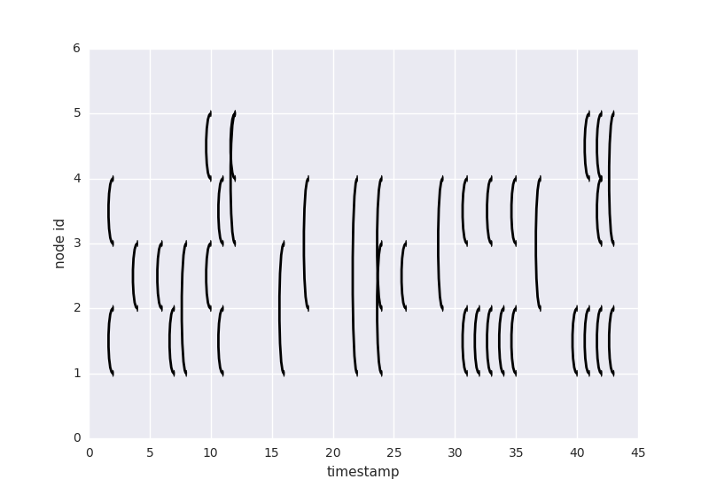
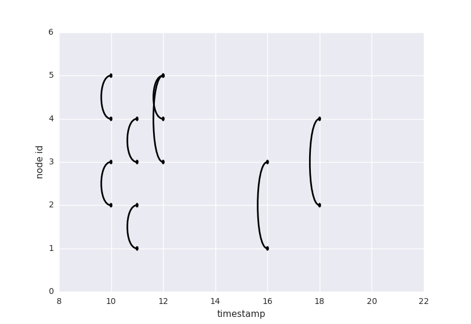
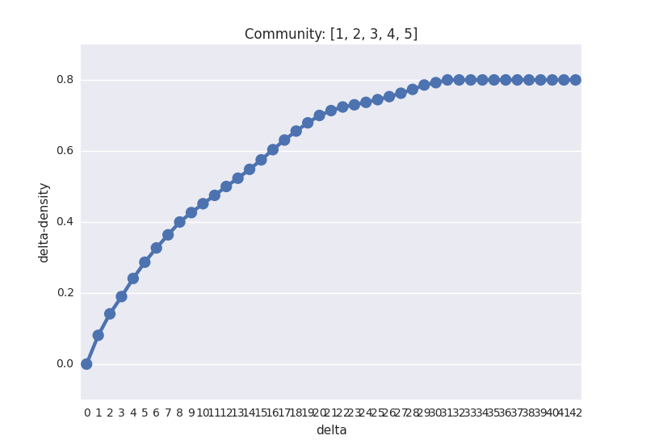

Profiling_Community_Dynamics.visualization_module package¶
Module contents¶
-
Profiling_Community_Dynamics.visualization_module.density_2nd_derivative_lsplot(linkstream, start_delta=None, end_delta=None, step=1, start_time=None, end_time=None, community=None)¶ Plot the evolution of deltadensity according to delta, second derivative of deltadensity, and linkstream in one figure.
Parameters: - linkstream – Linkstream object.
- start_delta (float) – Start delta you would like to compute.
- end_delta (float) – Start delta you would like to compute.
- floatstep – step of rising of delta.
- start_time (int) – Start timestamp.
- end_time (int) – Last timestamp.
- community – list of node id.
Type: list of axes
-
Profiling_Community_Dynamics.visualization_module.density_plot(linkstream, start_delta=None, end_delta=None, step=1, start_time=None, end_time=None, community=None)¶ Plot the evolution of deltadensity according to delta.
Parameters: - linkstream – Linkstream object.
- start_delta (float) – Start delta you would like to compute.
- end_delta (float) – Start delta you would like to compute.
- floatstep – step of rising of delta.
- start_time (int) – Start timestamp.
- end_time (int) – Last timestamp.
- community – list of node id.
Return type: axes
-
Profiling_Community_Dynamics.visualization_module.lsplot(linkstream, start_time=None, end_time=None, community=None)¶ Plot the linkstream.
Parameters: - linkstream – A Linkstream object.
- start_time (int) – Start timestamp.
- end_time (int) – Last timestamp.
- community – list of node id.
Return type: axes
-
Profiling_Community_Dynamics.visualization_module.max_deltadensity_min_delta_plot(linkstream, communities, start_time=None, end_time=None)¶ Parameters: - linkstream – Linkstream object.
- communities – List of community.
- start_time (int) – Start timestamp.
- end_time (int) – Last timestamp.
Return type: axes
Example¶
lsplot function¶
lsplot() is a function which visualizes a linkstream. X-axis is timestamp and Y-axis is node id. You can plot a linkstream by
import Profiling_Community_Dynamics as pcd
ls = pcd.read_linkstream(path='./data/example/linkstream.csv')
pcd.lsplot(ls)
and the result is
You can specify the time of a linkstream by assign the value to parameter start_time and end_time like this
pcd.lsplot(ls, start_time=10, end_time=20)
Then, X-axis is fit start_time and end_time like this
Moreover, you can specify the community too by assign list of node id to parameter community.
pcd.lsplot(ls, community=[1,2,3])
It plot only link which is occured between node in parameter community.

density_plot function¶
densityplot() is a function which visualizes the evolution of delta-density according to delta.
pcd.density_plot(ls)
X-axis is delta and Y-axis is delta-density. And, delta rises from 0 to whole time range of linkstream.
If you would like to specify start delta and end delta, you can assign parameter start_delta and end_delta.
pcd.density_plot(ls, start_delta=5, end_delta=20)
By default, whole time range of linkstream is the timestamp of last link occured in linkstream (minus zero). Although, you can assign the whole time range of linkstream by assigning parameter start_time and end_time.
pcd.density_plot(ls, start_time=1, end_time=100)
The same as lsplot, you can identify community which you would like to consider in parameter community.
pcd.density_plot(ls, community=[1,2,3])
density_2nd_derivative_lsplot function¶
This function creates the figure which consists of the evolution of delta-density according to delta, second derivative of delta-density, and linkstream plot.
pcd.density_2nd_derivative_lsplot(ls)
Setting parameter is like lsplot() and density_plot().
max_deltadensity_min_delta_plot function¶
The function creates the figure which X-axis refers to smallest delta where delta-density is maximum and Y-axis refers to the maximum delta-density of linkstream.
pcd.max_deltadensity_min_delta_plot(ls, communities=[(1,2), (1,4), (3,4,5)])
This function also has parameter start_time and end_time and the way to use it is the same as lsplot(), density_plot(), and density_2nd_derivative_lsplot().